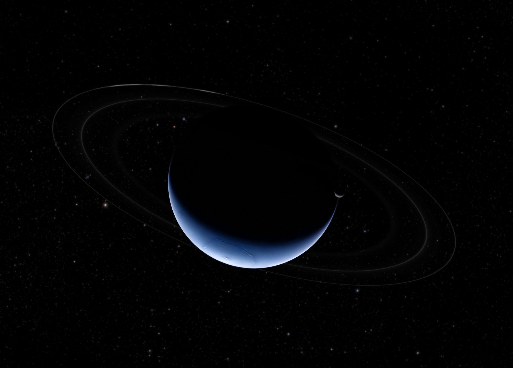
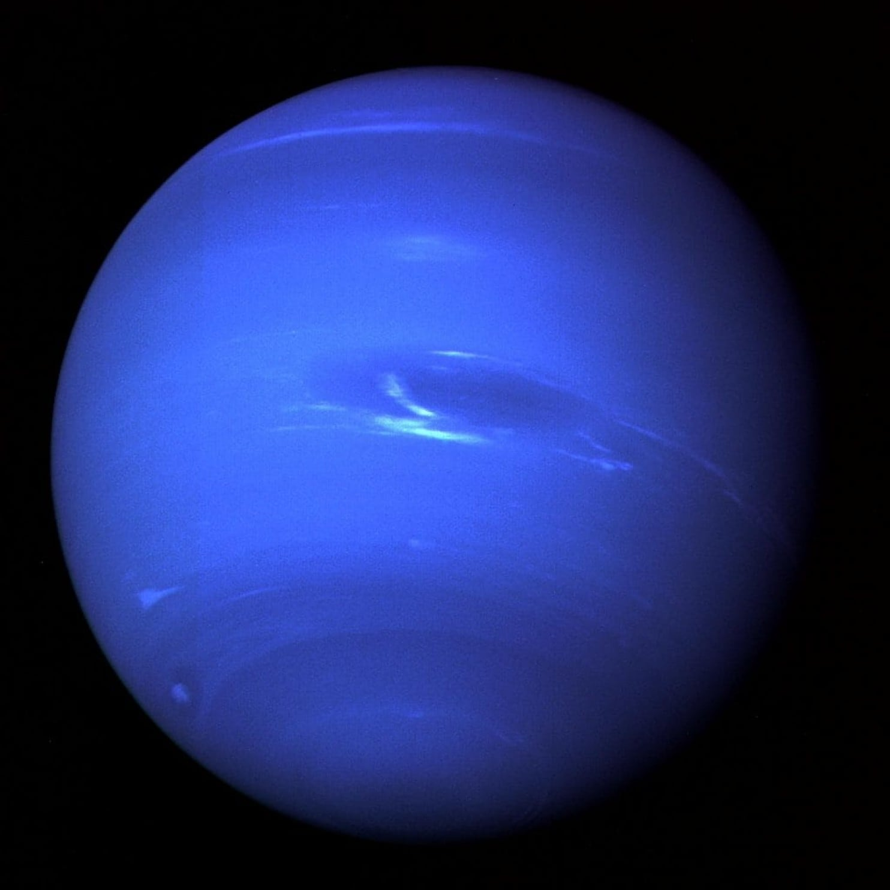
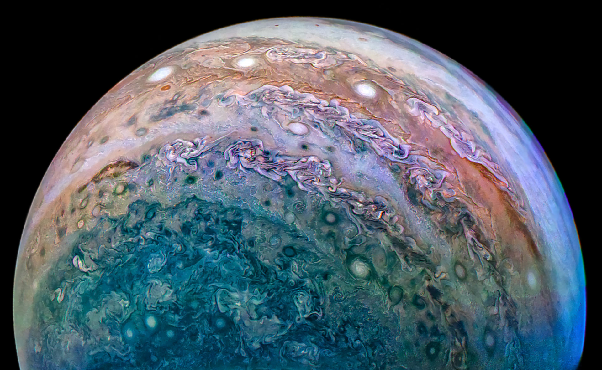

Saturn
A gas giant made up of mostly hydrogen and helium. THe planet has rings made of ice. Saturn has an entire 62 moons.

Neptune is a deep blue planet; the 8th farthest from the Sun. The atmosphere is very thick and made of methane. The planet is home to winds nine times stronger than those found on Earth.
Uranus contains many moons according to NASA. The planet's North/South Axis is actually sideways. The icy giant takes a whole 84 years to circle the Sun. The planet has no solid mass othar than gasses which became liquid under pressure.
A gas giant made up of mostly hydrogen and helium. THe planet has rings made of ice. Saturn has an entire 62 moons.
Obviously the largest planet in the solar system; it can fit 1300 Earths inside. The gravity is 2.4x that of the planet we live in. The gas giant is composed of mainly hydrogen and helium.
| Planet | Mass (kg) | Diameter (km) | Mean Density (kg/m^2) | Escape Velocity (m/s) | Average Distance From Sun (AU) | Rotation Period | Revolution Period |
|---|---|---|---|---|---|---|---|
| Neptune | 1.02 x 10^26 | 49,528 | 1,640 | 23,300 | 30.07 | 0.67 | 60,190 |
| Uranus | 8.68 x 10^25 | 51,118 | 1,290 | 21,300 | 19.19 | 0.72 | 30,685 |
| Saturn | 5.69 x 10^26 | 120,660 | 690 | 35,600 | 9.537 | 0.44 | 29.46 |
| Jupiter | 1.90 x 10^27 | 142,800 | 1,314 | 59,500 | 5.203 | 0.41 | 0.41 |